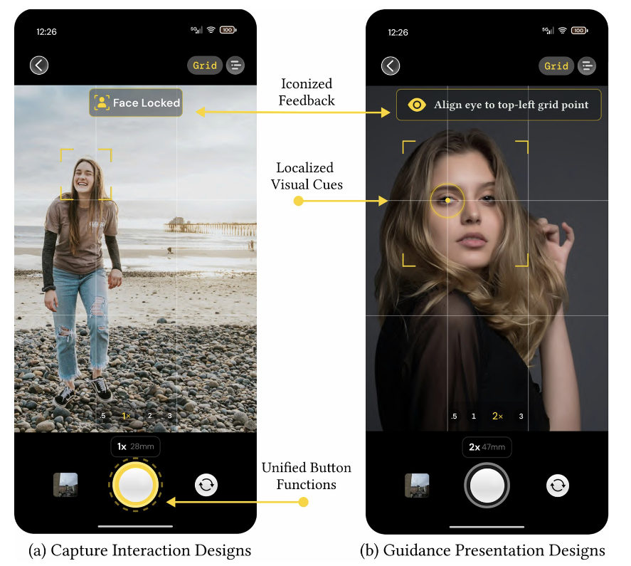

Vision-Language Models with In-Context Learning for In-Camera Portrait Composition Guidance
Duotun Wang, Rui Cao, Kunyu Feng, Wanling Li, Qian Zhong, Zhijing Shao, Yue Jiang, Zhiming Hu, Mingming Fan, Zeyu Wang*
The 39th Annual ACM Symposium on User Interface Software and Technology (UIST Adjunct ’26), 2026.

Abstract
Capturing aesthetically pleasing portraits requires specialized compositional knowledge that ordinary users often lack, making it difficult for them to achieve optimal camera framing. While vision-language models (VLMs) excel at general image understanding, they frequently produce overly positive feedback and lack the granular structural awareness needed to generate actionable compositional guidance. To address this, we present a visual in-context learning (ICL) framework that equips VLMs with augmented aesthetic evaluation capabilities. By retrieving structurally similar, professionally reframed image-composition analyses as visual prompts, our framework grounds VLM reasoning in established aesthetic standards, such as the rule of thirds and leading lines, and enables mapping compositional flaws to specific camera instructions.Links
Paper: paper.pdf
BibTeX
@inproceedings{wang2026camera,
author = {Wang, Duotun and Cao, Rui and
Feng, Kunyu and Li, Wanling and Zhong, Qian and
Shao, Zhijing and Jiang, Yue and Hu, Zhiming and
Fan, Mingming and Wang, Zeyu},
title = {Vision-Language Models with In-Context
Learning for In-Camera Portrait Composition
Guidance},
booktitle = {The 39th Annual ACM Symposium on User
Interface Software and Technology
(UIST Adjunct '26)},
year = {2026},
doi = {10.1145/3830397.3841846}}